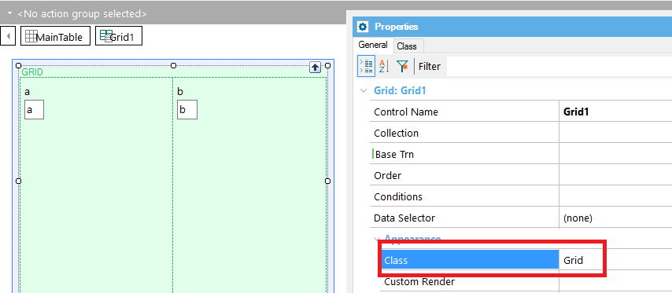
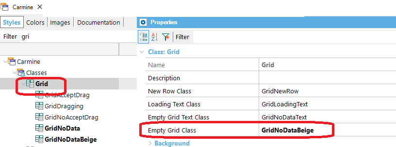
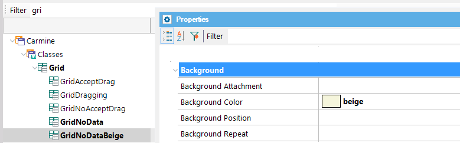

This document shows the steps to follow for giving a style to standard grids when they have no data to show. 1. Assign a class for the grid, such as the Grid class.  2. In the Theme, edit the Grid class and assign a value for the Empty Grid Class property of the Grid Class. Let's call it GridNoDataBeige.  3. Configure the GridNoDataBeige class according to the style you want for the grid when it displays no data. 
|